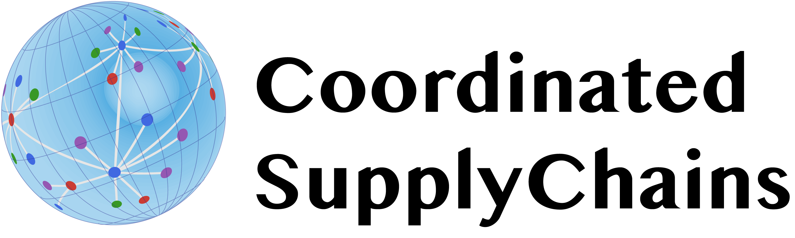

What is CoordinatedSupplyChains.jl?
CoordinatedSupplyChains.jl is a ready-made supply chain coordination model. It is built on the concept of supply chain economics, with prices driving transactions between supply chain stakeholders. In other words, with this approach, if a supply chain delivers a product to a customer, it is because it is profitable to do so. Under this economic interpretation, a supply chain is treated as a collection of stakeholders, including product suppliers, consumers, transportation, processing technologies, and environmental impact sinks. This conceptualization makes CoordinatedSupplyChains.jl particularly useful for analysis of sustainability-profit trade-offs.
CoordinatedSupplyChains.jl encodes a complex abstraction for large-scale supply chains into a simple, user-friendly interface that removes almost all the coding burden separating the user from the results. CoordinatedSupplyChains.jl is intended for users who want to solve supply chain problems under a coordination objective (i.e., supply chains as coordinated markets). It is intended to function equally well for users in practical settings (industrial practitioners) and for educators looking to teach complex OperationsResearch concepts.
CoordinatedSupplyChains.jl is an abstraction of a supply chain coordination model, the user defines a model by supplying information about supply chain structure, products, stakeholders, and environmental impacts. CoordinatedSupplyChains.jl uses this information to build the model, solve it (optionally with a user-specified solver) and returns solution information to the user.
Installation
CoordinatedSupplyChains.jl is a registered Julia package. Installation is as simple as
(@v1.7) pkg> add CoordinatedSupplyChainsCoordinatedSupplyChains.jl has the following dependencies, which will need to be installed as well (if they are not already installed globally, or as part of your project installation with CoordinatedSupplyChains.jl)
JuMPHiGHS
JuMP provides the modeling facility for the coordination problem, and CoordinatedSupplyChains.jl uses the HiGHS solver by default, which is open-source and does not require a license.
Citing
If CoordinatedSupplyChains.jl is useful in your research, we appreciate your citation to our work. This helps us promote new work and development on our code releases. We hope you find our code helpful, and thank you for any feedback you might have for us.
@article{TominacZavala2020,
title = {Economic properties of multi-product supply chains},
journal ={Comput Chem Eng},
pages = {107157},
year = {2020},
issn = {0098-1354},
doi ={https://doi.org/10.1016/j.compchemeng.2020.10715},
url = {http://www.sciencedirect.com/science/article/pii/S0098135420305810},
author = {Philip A. Tominac and Victor M. Zavala}
}@article{TomacZhangZavala2022,
title = {Spatio-temporal economic properties of multi-product supply chains},
journal = {Comput Chem Eng},
volume = {159},
pages = {107666},
year = {2022},
issn = {0098-1354},
doi = {https://doi.org/10.1016/j.compchemeng.2022.107666},
url = {https://www.sciencedirect.com/science/article/pii/S0098135422000114},
author = {Philip A. Tominac and Weiqi Zhang and Victor M. Zavala},
}Acknowledgements
We acknowledge support from the U.S. Department of Agriculture (grant 2017-67003-26055) and partial funding from the National Science Foundation (under grant CBET-1604374) in support of this work.